Children’s literature, literacy and childhood


Browse picturebook authors listed alphabetically by surname, with selected works listed newest first.
163 book entries
Beatrice Alemagna
Beatrice Alemagna uses textured marks, shifts in scale and unexpected perspectives to bring children’s curiosity and frustrations into view.

You Can’t Kill Snow White
Beatrice Alemagna
2022 · Enchanted Lion Books · United States
Alemagna revisits Snow White through unsettling images and a close attention to violence and transformation.

Never, Not Ever!
Beatrice Alemagna
2021 · HarperCollins · United States
A child’s determination to resist a change leads to an increasingly comic negotiation. Alemagna uses exaggeration and expression to make resistance understandable as well as funny.
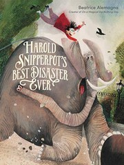
Harold Snipperpot’s Best Disaster Ever
Beatrice Alemagna
2020 · Thames & Hudson · United Kingdom
Harold’s unhappy birthday changes when an unusual visitor brings more guests than anyone expected.
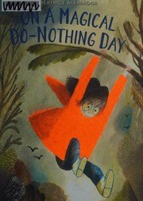
On a Magical Do-Nothing Day
Beatrice Alemagna
2018 · Thames & Hudson · United Kingdom
A child reluctantly leaves a screen behind and explores a wet outdoor world.

The Wonderful Fluffy Little Squishy
Beatrice Alemagna
2015 · Enchanted Lion Books · United States
A child searches her neighbourhood for a special present for her mother.

A Lion in Paris
Beatrice Alemagna
2014 · Tate Publishing · United Kingdom
An unfamiliar city gradually becomes a place where a lonely lion can be seen and accepted. Parisian landmarks sit alongside intimate moments of looking, making the outsider’s experience central to the journey.
Jenn Bailey
Jenn Bailey writes stories about an autistic child named Henry. A Friend for Henry and Henry, Like Always bring readers close to his experiences of friendship and changing classroom routines.

Henry, Like Always
Jenn Bailey · Mika Song
2023 · Chronicle Books · United States · ISBN 9781797213897
A change to the classroom routine unsettles Henry as his class prepares a parade.
Illustrated early reader
Schneider Family Book Award 2024
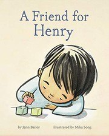
A Friend for Henry
Jenn Bailey · Mika Song
· San Francisco, California: Chronicle Books · United States
A classroom friendship told from the perspective of an autistic child.
Jeannie Baker
Jeannie Baker builds intricate collages from natural and found materials. In Window and Belonging, successive views of the same place let readers notice how a neighbourhood changes over time.

Desert Jungle
Jeannie Baker
2023 · Walker Books · United Kingdom
A young visitor gradually becomes attentive to a desert landscape and the life within it.

Circle
Jeannie Baker
2020 · Walker Books · United Kingdom
The migration of godwits links distant environments and the people who encounter them. Changes in scale connect individual birds with extensive journeys and habitats that depend on one another.

Mirror
Jeannie Baker
2010 · Walker Childrens Hardbacks · United Kingdom
Two families, one in Australia and one in Morocco, go about their daily lives in parallel visual narratives.

Belonging
Jeannie Baker
2008 · Walker Books · United Kingdom
The view from a window gradually changes as residents reclaim and plant their urban surroundings.

Window
Jeannie Baker
2002 · Walker Books Ltd · United Kingdom
A fixed view through a window changes as a child grows up.

The Hidden Forest
Jeannie Baker
2000 · Walker Books · United Kingdom
A child’s underwater encounter reveals a kelp forest that had seemed unfamiliar from the surface. Textured collage invites close attention to the relationships among sea life, place and human activity.

Where the Forest Meets the Sea
Jeannie Baker
1987 · Julia MacRae Books · United Kingdom
A child visits an Australian rainforest and imagines its deep past and possible future. Baker’s layered collage rewards close looking at the relationship between living forest, human history and development.
Mac Barnett
Mac Barnett writes picturebooks that invite readers to notice how a story is being made. In Chloe and the Lion, an argument between the author and illustrator becomes part of the plot.

Chloe and the Lion
Mac Barnett · Adam Rex
2012 · Disney-Hyperion · United States
The author and illustrator appear as characters and disagree about how to tell the story.

Extra Yarn
Mac Barnett · Illustrated by Jon Klassen
2012 · Balzer + Bray · United States
Annabelle knits colour into a wintry town from a box of yarn that never seems to run out.
Quentin Blake
Quentin Blake writes and illustrates picturebooks. His collaborations as a writer include Liliana the Strong, illustrated by Emma Chichester Clark.
More books on the Illustrators page
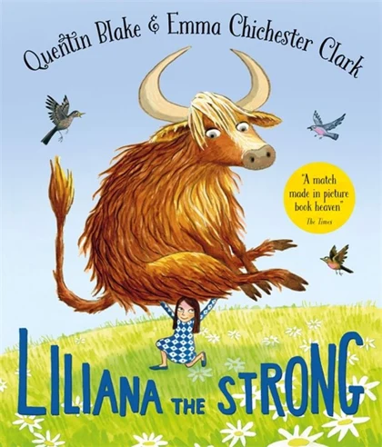
Liliana the Strong
Quentin Blake (author) · Emma Chichester Clark (illustrator)
· Macmillan Children’s Books · United Kingdom
A girl with extraordinary strength wonders what has happened to her powers when she is laid low by a cold.
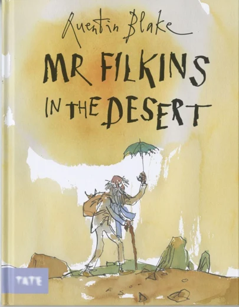
Mr Filkins in the Desert
Quentin Blake (author and illustrator)
· Tate Publishing · United Kingdom
On his way across the desert to his ninetieth birthday party, Mr Filkins finds that something ordinary in his backpack helps him face unexpected dangers.
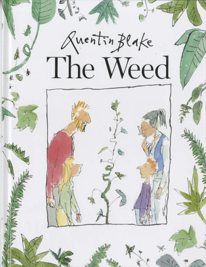
The Weed
Quentin Blake (author and illustrator)
· Tate Publishing · United Kingdom
When the Meadowsweet family fall into a crack in the earth, their pet mynah bird and a remarkable seed help them find a way out.
Anthony Browne
Waterstones Children’s Laureate, 2009–11.
Anthony Browne uses visual references, recurring motifs and details that invite a second look. In Voices in the Park, four accounts of the same outing reveal what each character notices and misses.

Once Upon a Time in the Woods
Anthony Browne
· Puffin · United Kingdom · ISBN 9780241710449
A journey into the woods brings familiar fairy-tale figures and unsettling details into the same story.

Willy and the Cloud
Anthony Browne
2016 · Walker Books · United Kingdom
A cloud follows Willy and changes the way he experiences his day. The visual metaphor leaves room to discuss persistent worry without requiring readers to identify a single cause.

Through the Magic Mirror
Anthony Browne
2010 · Walker Books · United Kingdom
Toby steps through a mirror into an altered version of his surroundings. Visual incongruities and reversals reward careful looking and let readers reconstruct the rules of the imagined world.

Little Beauty
Anthony Browne
2008 · Walker Books · United Kingdom
A gorilla’s request for companionship leads to a friendship with a kitten.

Silly Billy
Anthony Browne
2007 · Walker Childrens, Walker Books Ltd · United Kingdom
Billy’s worries multiply until his grandmother introduces worry dolls.

Into the Forest
Anthony Browne
2005 · Walker Books Ltd · United Kingdom
A child takes a route through the forest to visit his grandmother and encounters familiar fairy-tale figures.

The Shape Game
Anthony Browne
· Doubleday · United Kingdom · UK first edition · ISBN 0385601360 (hardback)
A family visit to an art gallery leads into playful transformations of shapes.

Willy’s Pictures
Anthony Browne
2000 · Walker Books · United Kingdom
Willy appears inside playful reinterpretations of well-known artworks.

Voices in the Park
Anthony Browne
1998 · Doubleday · United Kingdom
Four narrators describe an overlapping visit to a park. Shifts in type, colour and landscape make differences in mood and social position visible; compare what each voice notices and overlooks.

Zoo
Anthony Browne
1992 · Julia MacRae Books · United Kingdom
A family’s zoo visit raises uncomfortable questions about boredom, spectatorship and captivity.

The Tunnel
Anthony Browne
1989 · Julia MacRae Books · United Kingdom
A brother and sister enter an unsettling imaginative landscape through a tunnel. Visual references to fairy tales complicate the journey and the changing relationship between the siblings.

Piggybook
Anthony Browne
1986 · Julia MacRae Books · United Kingdom
A household takes a mother’s labour for granted until her absence makes that dependence impossible to ignore.

Willy the Wimp
Anthony Browne
1984 · Julia MacRae Books · United Kingdom
Willy tries to change himself after being mocked for his gentleness. The exaggeration of his transformation makes room to question whether strength requires copying the behaviour of bullies.

Gorilla
Anthony Browne
1983 · Julia MacRae Books · United Kingdom
Hannah longs for time with her father and imagines an extraordinary companion. Browne’s visual echoes and quiet domestic details reward looking beyond the fantasy to the relationship that frames it.
John Burningham
John Burningham lets the pictures carry a second story alongside the spoken text. In his Shirley books, a child’s imagined adventures unfold while adults talk about ordinary routines.

Oi! Get Off Our Train
John Burningham
1989 · Jonathan Cape · United Kingdom
A child’s train journey gathers animals whose homes are threatened.

John Patrick Norman McHennessy: The Boy Who Was Always Late
John Burningham
1987 · Jonathan Cape · United Kingdom
A boy’s extraordinary explanations for lateness are met with rigid disbelief. Repetition and the reversal at the end make this a pointed story about authority and whose account is taken seriously.

Granpa
John Burningham
1984 · Jonathan Cape · United Kingdom
A granddaughter and her grandfather share games, memories and fragments of conversation. Gaps between words and pictures invite readers to infer what connects the scenes, including the absence at the end.

Time to Get Out of the Bath, Shirley
John Burningham
1978 · Jonathan Cape · United Kingdom
An ordinary bath opens onto a large imaginative adventure that the adult voice does not acknowledge.

Come Away from the Water, Shirley
John Burningham
1977 · Jonathan Cape · United Kingdom
Adults rest on a beach while Shirley’s imaginative adventure unfolds alongside their warnings. The contrast between the two visual narratives rewards reading the pictures independently of the adult commentary.

Mr Gumpy’s Motor Car
John Burningham
1973 · Jonathan Cape · United Kingdom
A drive becomes difficult when rain turns the road to mud. The passengers’ excuses and eventual cooperation turn a small mishap into a story about sharing the work as well as the ride.
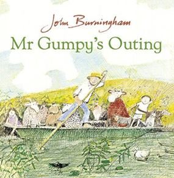
Mr Gumpy’s Outing
John Burningham
1970 · Jonathan Cape · United Kingdom
Mr Gumpy takes an increasingly crowded group for a boat ride. The repeating requests and fragile rules create anticipation before the inevitable upset, followed by a hospitable return to shore.

Borka: The Adventures of a Goose with No Feathers
John Burningham
1963 · Jonathan Cape · United Kingdom
A featherless goose struggles with expectations she cannot meet and finds help beyond her flock. Burningham’s textured pictures make the working harbour a setting for practical welcome rather than a demand to become the same as everyone else.
Rod Campbell
Rod Campbell writes and illustrates books for very young children. Dear Zoo pairs a repeated sentence pattern with flaps that make each new animal a small surprise.
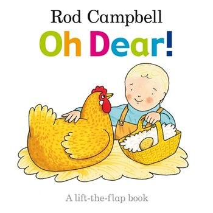
Oh Dear!
Rod Campbell
1983 · Macmillan Children’s Books · United Kingdom
A search for eggs takes Buster past a succession of farm animals.

Dear Zoo
Rod Campbell
First published 1982 · Listed edition: ISBN 9780230747722 · United Kingdom · Macmillan Children's Books
A child asks the zoo for a pet, but each delivery brings an unexpected problem. Lift-the-flap reveals and a recurring pattern leave room for children to predict, sign or name the next animal.
Eric Carle
Eric Carle’s painted-paper collages use colour and texture to give simple stories a strong visual rhythm. In The Very Hungry Caterpillar, die-cut holes and pages of different lengths turn reading into a physical activity.
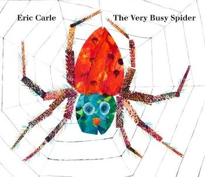
The Very Busy Spider
Eric Carle
2011 · Philomel Books · United States · ISBN 9780399256011
Farm animals interrupt a spider as she spins her web, but she keeps working.

Brown Bear, Brown Bear, What Do You See?
Bill Martin Jr · Eric Carle
2007 · Puffin · United States · ISBN 9780141501598
A recurring question links a sequence of animals and colours.

The Very Hungry Caterpillar
Eric Carle
First published 1969 · Listed edition: ISBN 9780140569322 · United States · Puffin Books
A caterpillar eats, grows and eventually becomes a butterfly. Collage, holes in the pages and changes in page size make this a book to explore with hands as well as eyes; compare its imaginative food sequence with a real caterpillar’s diet.
James Catchpole
James Catchpole writes picturebooks about disability from a child’s perspective. In What Happened to You? and You’re SO Amazing!, Joe questions the attention other people pay to his disabled body.

You’re SO Amazing!
James Catchpole and Lucy Catchpole · Karen George
2023 · Faber · United Kingdom
Joe questions why everyday play attracts praise simply because he is disabled. Read alongside What Happened to You?

What Happened to You?
James Catchpole · Karen George
· London: Faber & Faber · United Kingdom
A child with one leg wants to play while other children ask about his body.
Nidhi Chanani
Born in Kolkata and raised in California, Nidhi Chanani writes and illustrates picturebooks about creativity, family and finding one’s voice.
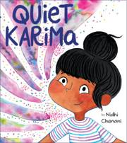
Quiet Karima
Nidhi Chanani
· Viking Books for Young Readers · United States · ISBN 9780593205099
Karima listens closely to the sounds around her and discovers how silence and sound work together in music.
Chih-Yuan Chen (陳致元)
Taiwan
Chih-Yuan Chen is a Taiwanese author and illustrator whose picturebooks explore belonging through expressive animal characters. He has received the Hsin Yi Picture Book Award three times.
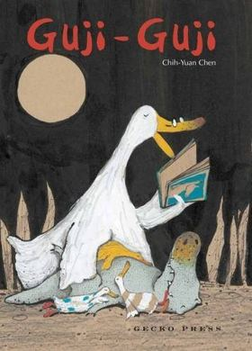
Guji-Guji
Chih-Yuan Chen (陳致元) (author-illustrator)
2011 · Gecko Press · New Zealand · Paperback edition
A crocodile raised by ducks must decide how to protect his family when other crocodiles demand his loyalty.

The Featherless Chicken
2006 · Heryin Books English edition · United States
A featherless chicken’s encounters invite discussion about appearance and acceptance.
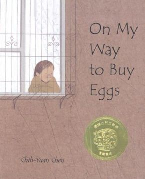
On My Way to Buy Eggs
2003 · Kane/Miller English edition · United States
A child’s ordinary errand becomes an imaginative journey through the neighbourhood.
Christopher Cheng
Christopher Cheng is an Australian children’s author whose picturebooks explore family, memory and care. One Tree and Bear and Rat approach these themes through very different visual worlds.
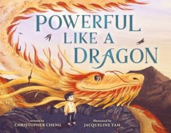
Powerful Like a Dragon
Christopher Cheng · Illustrated by Jacqueline Tam
2025 · Roaring Brook Press · United States · ISBN 9781250829399
Shu Lok is sent away from war with his cousins and draws strength from his parents’ words about dragons. The recurring dragon image connects courage, kindness and the experience of displacement.
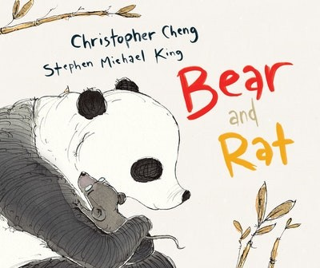
Bear and Rat
Christopher Cheng; illustrated by Stephen Michael King
2021 · Puffin · United Kingdom
A story of friendship and care through illness and difficult changes.

One Tree
Christopher Cheng; illustrated by Bruce Whatley
2019 · Puffin · United Kingdom · ISBN 9780143786733
A discovery at the city market brings a grandfather’s memories of a farm and its tree back to life.
Lauren Child
Waterstones Children’s Laureate, 2017–19.
Lauren Child uses collage, expressive lettering and playful dialogue to capture the rhythm of family conversations. Her Charlie and Lola books let Lola’s inventive arguments shape both the words and the pictures.
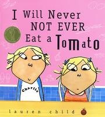
I Will Not Ever Never Eat a Tomato
Lauren Child
2018 · Orchard Books · United Kingdom
Charlie gives familiar foods surprising imaginary identities as he tries to interest Lola in dinner.

I Am Too Absolutely Small for School
Lauren Child
2003 · Candlewick Press · United States
Lola has plenty of reasons why she should stay home. The mixed lettering and collage give her arguments their own visual rhythm.
Sherryl Clark
Sherryl Clark writes poetry and fiction for children. She worked with Tom Jellett on the adventures of Nicholas Nosh.
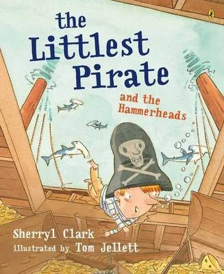
The Littlest Pirate and the Hammerheads
Sherryl Clark (author) · Tom Jellett (illustrator)
· Puffin Books · Australia
When Captain Hammerhead steals the family treasure, Nicholas Nosh sails after him and encounters four sharks.
Joseph Coelho
Waterstones Children’s Laureate, 2022–24.
Joseph Coelho writes poetry and picturebooks that make room for the small details of children’s everyday lives. His Luna books explore how shared visits to libraries and galleries can open up conversations.

Luna Loves Art
Joseph Coelho · Fiona Lumbers
2021 · Andersen Press · United Kingdom
A class visit to an art gallery gives Luna another way to get to know a classmate.
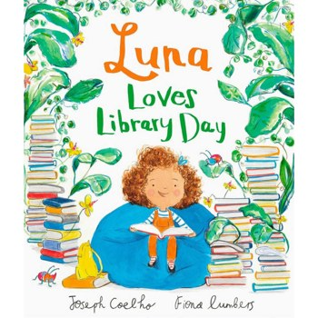
Luna Loves Library Day
Joseph Coelho · Fiona Lumbers
2018 · Andersen Press paperback · United Kingdom · ISBN 9781783445950
Luna’s library visit with her dad combines choosing books with time together.
Niki Daly
Niki Daly writes and illustrates picturebooks set in South Africa, from city neighbourhoods to rural communities.

The Herd Boy
Niki Daly
2012 · Eerdmans Books for Young Readers · United Kingdom / United States / South Africa · ISBN 9780802854179
A young herder in South Africa’s Eastern Cape looks after his grandfather’s sheep and goats while imagining what he might become.
Story / creator connection: South Africa
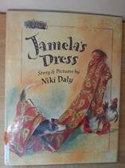
Jamela’s Dress
Niki Daly
· Farrar, Straus and Giroux · United States · ISBN 9780374336677
In South Africa, Jamela wraps herself in the fabric her mother has bought for a wedding and parades through the neighbourhood.
Kobina Commeh
Commeh brings the West African legend of Mami Wata into an intergenerational picturebook.

Kwesi and Nana Ruby Learn to Swim
Kobina Commeh (author) · Bárbara Quintino (illustrator)
· Barefoot Books · United States
Kwesi and his grandmother draw courage from the West African legend of Mami Wata as they learn to swim together.
Cori Doerrfeld
Cori Doerrfeld writes and illustrates stories about children’s emotional lives. The Rabbit Listened explores how it feels when someone gives a child time and space to respond after a disappointment.

Goodbye, Friend! Hello, Friend!
Cori Doerrfeld
2019 · Dial Books · United States
Two friends help readers notice the new beginnings that can follow goodbyes.

The Rabbit Listened
Cori Doerrfeld
· New York: Dial Books · United States
When something Taylor has made falls apart, a quiet companion offers a way to think about listening after loss or disappointment.
Julia Donaldson
Children’s Laureate, 2011–13.
Julia Donaldson writes rhyming picturebooks with refrains that invite children to join in. Her collaborations with Axel Scheffler and Lydia Monks show how different illustrators give those rhythms a visual form.
Explore rhyming picturebooks and read-alouds

Gruffalo Granny
Julia Donaldson · Illustrated by Axel Scheffler
· Macmillan Children’s Books · United Kingdom · ISBN 9781035065516
Gruffalo Granny visits the Gruffalo family in the deep dark wood.

What the Ladybird Heard
Julia Donaldson · illustrated by Lydia Monks
2025 · Macmillan Children’s Books · United Kingdom · ISBN 9781035049141
A quiet ladybird overhears two thieves plotting to steal the prize cow. She and the other farm animals hatch a plan to stop them.

The Snail and the Whale
Julia Donaldson · illustrated by Axel Scheffler
2023 · Macmillan Children’s Books · United Kingdom · ISBN 9781509845293
A small snail travels with a whale and finds a way to help when the whale is stranded. Listen to how the verse shifts in pace across the journey.

The Smeds and the Smoos
Julia Donaldson · illustrated by Axel Scheffler
2019 · Alison Green Books · United Kingdom · ISBN 9781407188898
Two young aliens fall in love despite their families’ feud. The rhyme makes the invented names and words easy to join in with.

Room on the Broom
Julia Donaldson · illustrated by Axel Scheffler
2017 · Macmillan Children’s Books · United Kingdom · ISBN 9781509830435
A witch welcomes companions onto her broom. When the broom snaps and a dragon threatens her, the animals come to her rescue.

Stick Man
Julia Donaldson · illustrated by Axel Scheffler
2016 · Alison Green Books · United Kingdom · ISBN 9781407170718
Mistaken for all sorts of objects, Stick Man tries to find his way home to his family.

The Gruffalo
Julia Donaldson · illustrated by Axel Scheffler
2016 · Macmillan Children’s Books · United Kingdom · ISBN 9781509804757
A quick-thinking mouse invents a monster to outwit predators he meets in the wood.

The Smartest Giant in Town
Julia Donaldson · illustrated by Axel Scheffler
2016 · Macmillan Children’s Books · United Kingdom · ISBN 9781509812530
A giant gives away pieces of his new outfit. The accumulating rhymes make each act of generosity part of a pattern.
Marianne Dubuc
Montréal author-illustrator Marianne Dubuc uses economical text and visual detail to tell stories about care, companionship and change.
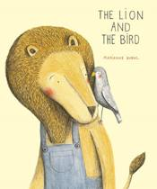
The Lion and the Bird
Marianne Dubuc
· Enchanted Lion Books · United States · ISBN 9781592701513
A lion cares for an injured bird through the winter. Their friendship changes when the bird’s flock returns.
Stella East
Stella East is a Canadian-born author and illustrator based in Norway. Her picturebook about Sim pairs an imaginative story with information about wolves.
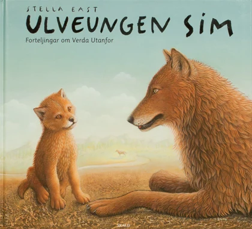
Ulveungen Sim
Stella East (author and illustrator)
· Skald · Norway
A wolf cub growing up in a zoo imagines the world outside through the stories his mother tells him.
Bianca Flanders
Flanders writes the South African Pumpkin picturebook series, illustrated by Zinelda McDonald.
Pumpkin and the Hidden Heroes
Bianca Flanders (author) · Zinelda McDonald (illustrator)
· LAPA Klaskameraad · South Africa
Pumpkin notices the people who collect the rubbish and starts looking for other everyday heroes.
Pumpkin Finds Her Beat
Bianca Flanders (author) · Zinelda McDonald (illustrator)
· LAPA Publishers · South Africa
Pumpkin searches for a rhythm that feels like her own.
Taro Gomi
Japan
Taro Gomi uses clear shapes, bright colour and economical language to explore familiar experiences from a child’s perspective. His books make observation and everyday learning playful.

Everyone Poops
Taro Gomi
· Chronicle Books · United States · ISBN 9781797202648
Animals and people are shown going to the toilet in a matter-of-fact introduction to a bodily function.

I Really Want to See You, Grandma
2018 · Chronicle Books · United States
A granddaughter and grandmother set out to visit each other, creating a playful story about family connection.

My Friends
Taro Gomi (author-illustrator)
2005 · Chronicle Books · United States · Board book edition
A child describes what she has learnt from animal friends, linking everyday actions with companionship.
Chris Haughton
Chris Haughton creates picturebooks with bold colour, simplified shapes and carefully timed page turns. Goodnight Everyone uses a repeated pattern to ease readers towards sleep.

Goodnight Everyone
Chris Haughton
2017 · Walker Books · United Kingdom · ISBN 9781406373226
Sleep spreads through a forest while a young bear insists on staying awake. Repeated yawns and expanding views slow the pace, with the visual movement between small creatures and the wider night offering a calm ending.
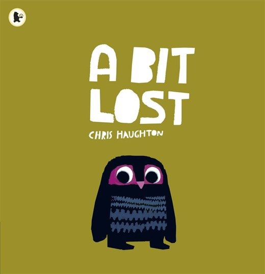
A Bit Lost
Chris Haughton
2010 · Walker Books · United Kingdom
A young owl looks for his mother with the help of a well-meaning squirrel.
Kevin Henkes
Kevin Henkes’s picturebooks use humour and close observation to follow children through school, friendships and family life. In Chrysanthemum, a child’s feelings about her name change as the people around her respond to it.

Owen
Kevin Henkes
1993 · Greenwillow Books · United States
A cherished yellow blanket helps Owen face the changes that come with starting school.
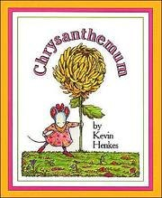
Chrysanthemum
Kevin Henkes
1991 · Greenwillow Books · United States
A child who loves her name begins to doubt it after classmates tease her.
Eric Hill
Eric Hill created Spot, a puppy whose everyday adventures are built around questions and discoveries. In Where’s Spot?, the flaps let children take the lead in the search.
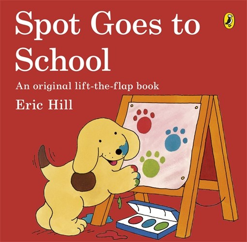
Spot Goes to School
Eric Hill
1984 · William Heinemann · United Kingdom
Follow Spot’s first school day and use the flaps to predict what he will do next.
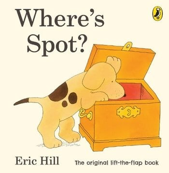
Where’s Spot?
Eric Hill
First published 1980 · Listed edition: ISBN 9780723263661 · United Kingdom · Penguin Books, Limited
Sally searches around the house for her missing puppy.
Joanna Ho
Joanna Ho writes picturebooks that explore family relationships and cultural identity. In Eyes That Kiss in the Corners, a child sees her own features reflected in women across generations of her family.

Eyes That Speak to the Stars
Joanna Ho · Illustrated by Dung Ho
2022 · HarperCollins · United States
A boy draws strength from family stories when a classmate’s drawing makes him question how others see him.

Eyes That Kiss in the Corners
Joanna Ho · Dung Ho
· New York: Harper · United States
A girl sees a family resemblance across generations and learns to value it.
Shirley Hughes
Shirley Hughes wrote and illustrated the everyday lives of young children. In Dogger, gestures and small domestic details make the loss of a favourite toy feel as momentous as it does to a child.

Alfie Gets in First
Shirley Hughes
1981 · Bodley Head · United Kingdom
Alfie races indoors and finds himself locked in with the adults outside.

Dogger
Shirley Hughes
First published 1977 · Listed edition: ISBN 9781862308053 · United Kingdom · Red Fox
Dave’s treasured toy dog disappears and turns up on a school-fair stall. Hughes makes a small domestic loss feel momentous; look at the wordless exchanges that reveal his sister Bella’s kindness.
Vangelis Iliopoulos
Vangelis Iliopoulos is a Greek children’s author and educator. His stories about a triangle-shaped fish explore difference and belonging.
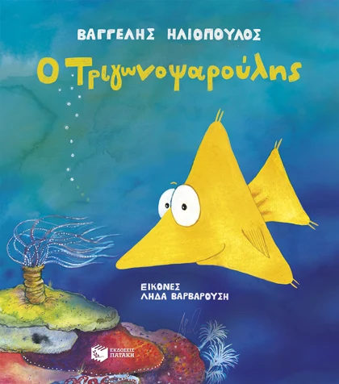
Ο Τριγωνοψαρούλης
Vangelis Iliopoulos (author) · Leda Varvarousi (illustrator)
· Patakis Publishers · Greece
A triangle-shaped fish is teased for looking different. The full-colour edition revisits the original 1997 story.
Isol
Argentine author-illustrator Isol (Marisol Misenta) uses unusual book formats and shifts in point of view to invite readers to look again. She received the 2013 Astrid Lindgren Memorial Award.
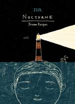
Nocturne: Dream Recipes
Isol
· Groundwood Books · Canada · ISBN 9781554981793
A collection of dream prompts uses illustrations that reveal a second image in the dark.

It’s Useful to Have a Duck
Isol
· Groundwood Books · Canada · ISBN 9780888999276
One side of this accordion book tells the boy’s story. Turn it over to see the same events from his toy duck’s point of view.
Oliver Jeffers
Oliver Jeffers writes and illustrates picturebooks that pair spare language with unexpected visual ideas. Lost and Found explores friendship through a journey, while The Heart and the Bottle gives grief a physical form.

The Dictionary Story
Oliver Jeffers and Sam Winston
· Walker Books · United Kingdom · ISBN 9781406395471
Dictionary decides she wants to tell a story, and the words on her pages tumble into one another.

Lost and Found
Oliver Jeffers
2014 · HarperCollins · United Kingdom
A boy assumes a penguin needs help returning home and sets out across the sea.

The Day the Crayons Quit
Drew Daywalt · Oliver Jeffers
First published 2013 · Listed edition: ISBN 9780007513765 · United States
Duncan’s crayons write letters protesting about the work they are given.

The Heart and the Bottle
Oliver Jeffers
· London: HarperCollins Children’s Books · United Kingdom
A visual metaphor for withdrawing after loss and gradually opening up again.
Nahid Kazemi
Nahid Kazemi is an Iranian-born author and illustrator based in Montreal. Her work ranges from picturebooks inspired by Persian storytelling to stories about family memory.
More books on the Illustrators page
Shahrzad & the Angry King
Nahid Kazemi (author and illustrator)
· Enchanted Lion Books · United States
After hearing why a boy fled his home, Shahrzad imagines visiting the angry king and telling him stories that change how he sees his people.
Judith Kerr
Judith Kerr wrote and illustrated picturebooks in which ordinary domestic detail meets comic surprise. In the Tiger and Mog stories, expressions and background details often carry a joke alongside the words.
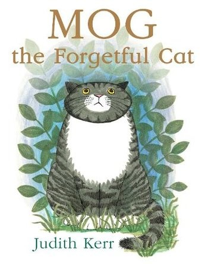
Mog the Forgetful Cat
Judith Kerr
2005 · HarperCollins Children’s Books · United Kingdom · ISBN 9780007171347
Mog’s ordinary mistakes frustrate her family until an unexpected night-time event changes how they see her.

Goodbye Mog
Judith Kerr
· London: Collins · United Kingdom
A family says goodbye to an old cat as a new kitten arrives.

The Tiger Who Came to Tea
Judith Kerr
First published 1968 · Listed edition: ISBN 9780007215997 · United Kingdom · HarperCollinsChildren'sBooks; HarperCollins
A tiger unexpectedly joins Sophie for tea, eats everything and leaves her family improvising supper.
Patrice Lawrence
Waterstones Children’s Laureate, 2026–28.
Patrice Lawrence writes for readers from early childhood through the teenage years. In Granny Came Here on the Empire Windrush, a conversation with a grandmother connects family storytelling to migration history.

Granny Came Here on the Empire Windrush
Patrice Lawrence · Camilla Sucre
2022 · Nosy Crow · United Kingdom · ISBN 9781839942310
Objects from Granny’s suitcase open up a family history of migration from Trinidad to England. The story touches on racism and belonging.

Our Story Starts in Africa
Patrice Lawrence · Jeanetta Gonzales
2022 · Magic Cat Publishing · United Kingdom
A family visit to Trinidad opens up a conversation about African and Caribbean histories.
JiHyeon Lee
South Korea
JiHyeon Lee creates wordless picturebooks in which changes of colour and scale open up unexpected worlds. Her books invite close attention to encounters between unfamiliar characters.
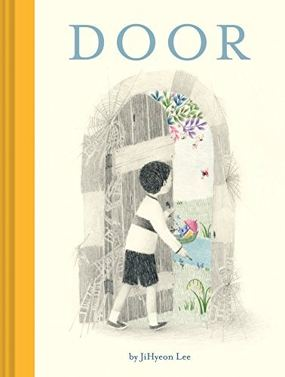
Door
JiHyeon Lee (author-illustrator)
2018 · Chronicle Books · United States
A child opens a mysterious door and enters a world where curiosity creates possibilities for friendship.
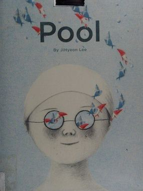
Pool
JiHyeon Lee (author-illustrator)
2015 · Chronicle Books · United States · ISBN 9781452142944
A wordless picturebook in which two children discover friendship in an imaginative underwater world.
Suzy Lee
Suzy Lee creates wordless picturebooks in which the book itself shapes the action. In Wave and Shadow, the fold and edges of the page become boundaries characters can cross.

The Zoo
Suzy Lee
2016 · Eerdmans Books for Young Readers · United States
A visit to the zoo takes an unexpected turn as the pictures begin to diverge from the written account. Look back through the scenes to reconsider who is observing whom.
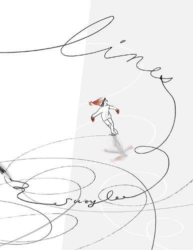
Lines
Suzy Lee
2015 · Chronicle Books LLC · United States
Marks on ice lead into an exploration of movement, mistakes and drawing itself. The almost empty page makes each change of direction visible and leaves room to ask where a picture begins.

Open This Little Book
Jesse Klausmeier (author) · Suzy Lee (illustrator)
2013 · Chronicle Books · United States
Nested books let readers follow characters who are also reading stories.

Mirror
Suzy Lee
2010 · Seven Footer Press · United States
A child encounters a reflected figure whose actions begin to diverge from her own.
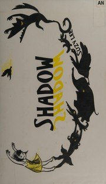
Shadow
Suzy Lee
2010 · Chronicle Books · United States
Household objects cast shadows that become a growing imaginative world.

Wave
Suzy Lee
· Chronicle Books · United States · ISBN 9780811859240
A girl’s encounter with the sea unfolds through gesture, colour and the space between the facing pages.
Jimmy Liao (幾米)
Jimmy Liao (幾米) is a Taiwanese author and illustrator whose picturebooks use cityscapes and imagined journeys to explore solitude and connection. In Turn Left, Turn Right, parallel scenes follow two neighbours who keep missing each other.

地下鐵 (The Sound of Colors)
Jimmy Liao (幾米)
2001 · 大塊文化 · Taiwan · ISBN 9570316519
A journey through a city railway turns into a series of imagined scenes.

向左走．向右走 (Turn Left, Turn Right)
Jimmy Liao (幾米)
1999 · 格林文化 · Taiwan · ISBN 9577452035
Parallel scenes follow two neighbours whose daily routes keep taking them in opposite directions.
Grace Lin
Grace Lin writes and illustrates stories in which family life, food and folklore are closely connected. Her work moves between everyday Chinese American childhoods and richly imagined settings.

The Little Stone Buddha
Grace Lin
· Little, Brown Books for Young Readers · United States · ISBN 9780316478403
A small stone Buddha placed on a neglected city street becomes a gathering point for neighbours.

A Big Bed for Little Snow
Grace Lin
2019 · Little, Brown Books for Young Readers · United States
Little Snow is tempted to bounce on a wonderfully full bed. The pictures connect his indoor mischief with snowfall, giving readers a visual secret beyond the straightforward account of a child testing a rule.

A Big Mooncake for Little Star
Grace Lin
· New York: Little, Brown and Company · United States
A playful story about the phases of the moon, inspired by the Mid-Autumn Festival.

Thanking the Moon: Celebrating the Mid-Autumn Moon Festival
Grace Lin
2010 · Alfred A. Knopf · United States
A family prepares and shares a moon-viewing picnic.

Bringing In the New Year
Grace Lin
· New York: Alfred A. Knopf · United States
A Chinese American family prepares for Lunar New Year through shared household traditions.
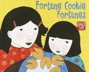
Fortune Cookie Fortunes
Grace Lin
2006 · Dragonfly Books · United States
A family’s fortune cookies prompt speculation about what the messages might mean.

Kite Flying
Grace Lin
· New York: Alfred A. Knopf · United States
A family makes and flies a dragon kite together.
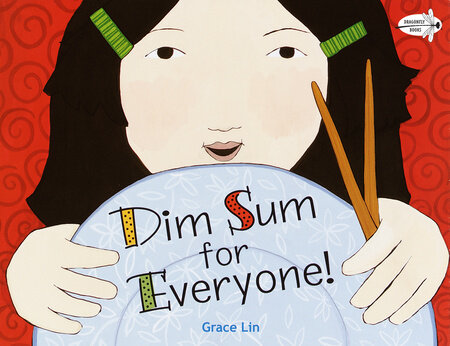
Dim Sum for Everyone!
Grace Lin
· New York: Alfred A. Knopf · United States
A family shares small dishes at a dim sum restaurant, with details that invite children to talk about food and family routines.

The Ugly Vegetables
Grace Lin
1999 · Charlesbridge Publishing · United States · Hardcover ISBN 9780881063363
A child envies neighbouring flower gardens before discovering what her mother’s vegetables contribute to a shared meal.
Hsu-Kung Liu (劉旭恭)
Taiwan
Hsu-Kung Liu creates picturebooks that connect imaginative situations with everyday feelings. His work includes The Orange Horse and Little Monk Writes Rain.
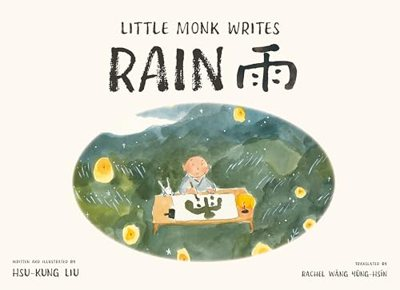
Little Monk Writes Rain
Hsu-Kung Liu (劉旭恭) (author-illustrator)
2026 · Eerdmans Books for Young Readers · United States
A young monk repeatedly writes the character for rain, exploring attention, practice and self-expression.

Look at You! Look at the Mess You’ve Made!
2021 · Reycraft Books · United States · ISBN 9781478875413
A playful picturebook exploring a child’s mess-making and adults’ responses.

The Orange Horse
2019 · Reycraft Books · United States · ISBN 9781478868187
A horse searches for belonging in a visually distinctive story.
Trudy Ludwig
Trudy Ludwig writes picturebooks about the social dynamics of childhood. The Invisible Boy looks at quiet exclusion in the classroom and the effect of a classmate’s invitation.

Quiet Please, Owen McPhee!
Trudy Ludwig · Illustrated by Patrice Barton
2018 · Alfred A. Knopf Books for Young Readers · United States
A talkative boy discovers what he can learn when he makes time to listen.

The Invisible Boy
Trudy Ludwig · Patrice Barton
2013 · Tricycle Press · United States
Brian is present in his classroom but often goes unnoticed. Colour gradually changes as another child includes him; look at how ordinary invitations and shared work make participation possible.
Kyle Lukoff
Kyle Lukoff writes children’s books about gender, family and belonging. When Aidan Became a Brother follows a transgender boy preparing to welcome a new sibling.

Just What to Do
Kyle Lukoff · Illustrated by Hala Tahboub
2024 · G. P. Putnam’s Sons Books for Young Readers · United States
A child learns that people who are grieving may want different kinds of support.

When Aidan Became a Brother
Kyle Lukoff · Kaylani Juanita
· New York: Lee & Low Books · United States
A transgender boy thinks about how to welcome a new sibling.
Katherina Manolessou
Katherina Manolessou writes and illustrates picturebooks. In her Ladybird books, readers scan busy scenes for the characters as the story unfolds.
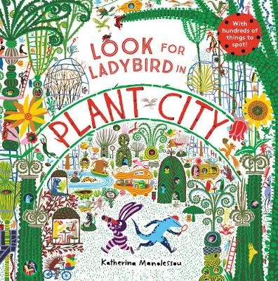
Look for Ladybird in Plant City
Katherina Manolessou (author and illustrator)
· Frances Lincoln Children’s Books · United Kingdom
When their pet ladybird goes missing, Daisy and Basil search the crowded streets and buildings of Plant City.
David McKee
David McKee wrote and illustrated picturebooks in which bright colour and dry humour carry difficult ideas. Elmer explores belonging, while Tusk Tusk and Two Monsters look at conflict and perspective.
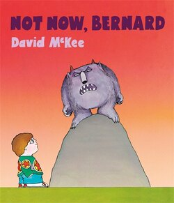
Not Now, Bernard
David McKee
2020 · Andersen Press · United Kingdom
Bernard tries to attract his parents’ attention while a monster waits outside.

Tusk Tusk
David McKee
2018 · Andersen Press · United Kingdom
Black and white elephants become divided by hostility while others leave the conflict behind.

Elmer and the Rainbow
David McKee
2009 · Andersen Press · United Kingdom
Elmer wants to help a rainbow that has lost its colours. The visual problem opens a playful discussion of giving and whether sharing must leave the giver diminished.

Two Monsters
David McKee
2009 · Andersen Press · United Kingdom
Two creatures interpret the same event differently and turn disagreement into a destructive exchange.

Elmer and the Lost Teddy
David McKee
2008 · Andersen Press editions · United Kingdom
An elephant cannot sleep without his teddy, so Elmer helps search for it. The familiar attachment object makes a gentle route into talking about comfort, difference and practical care.

Elmer
David McKee
2007 · Andersen Press editions · United Kingdom
A patchwork elephant tries to look like the rest of the herd and discovers what his absence changes. Look beyond the celebration of colour to the herd’s shared humour and Elmer’s wish to belong.

The Conquerors
David McKee
2005 · Andersen Press · United Kingdom
A general’s campaign encounters a country that changes his soldiers in unexpected ways.

Two Can Toucan
David McKee
2001 · Andersen Press · United Kingdom
An unnamed bird looks for work and a place in the world. Wordplay and the jobs it attempts create a comic route towards a name and an identity.
Robert Munsch
Canada
Robert Munsch is a Canadian picturebook storyteller known for energetic read-aloud language, humour and unexpected reversals. Love You Forever is one of my favourite picturebooks, especially for its portrayal of love and care across generations.

Stephanie’s Ponytail
Robert Munsch · Michael Martchenko
1996 · Annick Press · Canada
Stephanie tries distinctive hairstyles while her classmates copy her, inviting reflection on individuality and conformity.
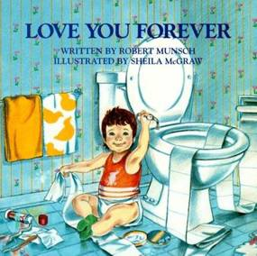
Love You Forever
Robert Munsch · Sheila McGraw
1986 · Firefly Books · Canada
One of my favourite picturebooks. A mother rocks her son as a baby and continues to cherish him as he grows up. When she becomes elderly, he holds her in return, and the story closes with love passing to a new generation.

The Paper Bag Princess
Robert Munsch · Michael Martchenko
1980 · Annick Press · Canada
Elizabeth sets out to rescue a prince after a dragon destroys her home. Her resourcefulness and the prince’s response turn the familiar rescue plot into a question about respect.
Jill Murphy
Jill Murphy wrote and illustrated stories about the comic frustrations of family life. In Peace at Last, familiar household noises keep returning just as Mr Bear is about to fall asleep.

Five Minutes’ Peace
Jill Murphy
1986 · Walker Books · United Kingdom
Mrs Large tries to find a few quiet minutes away from her lively family.
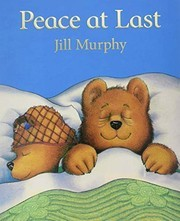
Peace at Last
Jill Murphy
First published 1980 · Listed edition: ISBN 9781509862597 · United Kingdom · Macmillan Children's Books
Mr Bear moves from place to place looking for somewhere quiet enough to sleep.
Chris Naylor-Ballesteros
Chris Naylor-Ballesteros writes and illustrates stories in which small gestures carry much of the meaning. In The Suitcase, the arrival of a stranger prompts questions about trust and welcome.

Frank and Bert
Chris Naylor-Ballesteros
2022 · Nosy Crow · United Kingdom
Two friends play hide-and-seek. The pictures let readers spot clues before the characters do.

The Suitcase
Chris Naylor-Ballesteros
2019 · Nosy Crow · United Kingdom
An exhausted newcomer arrives with a suitcase. The other animals’ decision to open it invites discussion about trust and welcome.
Zandile Ndhlovu
Ndhlovu brings her love of the ocean to a story about a young diver.

Zandi’s Song
Zandile Ndhlovu (author) · Katlego Keokgale (illustrator)
· Pan Macmillan South Africa · South Africa
A girl drawn to the sea encounters an underwater world and hears a call to care for it.
Helena Öberg
Helena Öberg writes for children and young people in Sweden. Her collaboration with Kristin Lidström combines comics and picturebook storytelling.
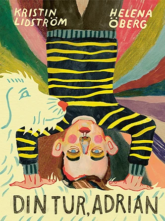
Din tur, Adrian
Helena Öberg (author) · Kristin Lidström (illustrator)
· Mirando Bok · Sweden
Adrian imagines himself as a circus acrobat when reading aloud at school becomes overwhelming. An unexpected friendship with a wolfhound begins to change his days. This illustrated narrative also uses comics.
Petros Panaou
Petros Panaou is a Cypriot author and a professor of children’s literature. His first picturebook follows a mouse whose curiosity keeps getting her into trouble.
Η Ποντικίνα Δώρα, Η Περιέργεια και η Γάτα
Petros Panaou (author) · Thenta Mimilaki (illustrator)
· Teleia Publications · Cyprus
Dora Mouse keeps asking questions, even after her mother warns her about what curiosity did to the cat.
Tom Percival
Tom Percival uses visual metaphors to make feelings and social experiences easier to discuss. In Ruby’s Worry, worry takes on a visible shape, while The Invisible asks who gets noticed in a community.
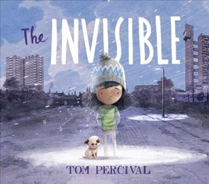
The Invisible
Tom Percival
2021 · Simon & Schuster UK · United Kingdom · ISBN 9781471191305
After her family moves because they cannot afford to stay, Isabel feels overlooked and notices others in the same position. The illustrations use visibility to explore poverty and belonging.

Ruby’s Worry
Tom Percival
First published 2018 · Listed edition: ISBN 9781408892152 · United Kingdom
Ruby notices a worry that follows her and grows as she tries to hide it.
Beatrix Potter
Beatrix Potter paired closely observed animals and landscapes with comic stories about manners, appetite and danger. The illustrations in The Tale of Peter Rabbit show how much is at stake for a small rabbit in a familiar garden.
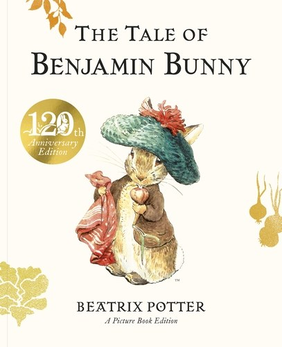
The Tale of Benjamin Bunny
Beatrix Potter
1904 · Frederick Warne & Co. · United Kingdom
Benjamin goes back to Mr McGregor’s garden with his cousin Peter.

The Tale of Peter Rabbit
Beatrix Potter
1902 · Frederick Warne & Co. · United Kingdom · First edition
Peter enters Mr McGregor’s garden despite his mother’s warning and struggles to escape.
Peter H. Reynolds
Peter H. Reynolds writes and illustrates stories about children finding confidence in their own ideas. In The Dot, a single mark becomes the starting point for creative experimentation.
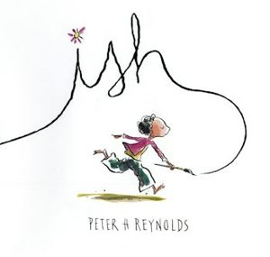
Ish
Peter H. Reynolds
2004 · Candlewick Press · United States
Ramon rediscovers the pleasure of drawing when he gives himself room to make pictures that look ‘ish’.

The Dot
Peter H. Reynolds
2003 · Candlewick Press · United States
Vashti’s reluctance to make art changes after a teacher takes her first mark seriously. The story opens questions about encouragement, experimentation and whose work gets displayed as art.
Rose Robbins
Rose Robbins writes and illustrates picturebooks about autistic and other neurodivergent children’s everyday lives. Loud! and Me and My Sister show how siblings, teachers and classrooms can shape children’s experiences.

Loud!
Rose Robbins
2021 · Scallywag Press · United Kingdom
Abigail’s restlessness takes on a new meaning when her teacher notices her talent for making music. BookTrust identifies ADHD as implied.

Me and My Sister
Rose Robbins
First published 2019 · Listed edition: ISBN 9781912650231 · United Kingdom · Scallywag Press Ltd
A brother describes everyday life with his autistic sister, including disagreements, sensory differences and shared pleasures.
Michael Rosen
Waterstones Children’s Laureate, 2007–09.
Winner of the 2026 Hans Christian Andersen Award for Writing.
Michael Rosen writes poetry and picturebooks shaped by the rhythms of speech. His work ranges from the repeated lines that invite children to join in with We’re Going on a Bear Hunt to the personal account of bereavement in Michael Rosen’s Sad Book.

Neighbour’s Cat
Michael Rosen · Illustrated by Alex Willmore
· Walker Books · United Kingdom · ISBN 9781529502411
A neighbour’s cat makes itself at home, upending a household’s routines.
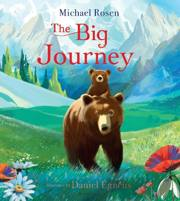
The Big Journey
Michael Rosen · Illustrated by Daniel Egnéus
· Bloomsbury Children’s Books · United Kingdom · ISBN 9781526671578
Two bears travel through unfamiliar places in search of somewhere they can live safely.
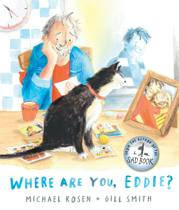
Where Are You, Eddie?
Michael Rosen · Illustrated by Gill Smith
· Walker Books · United Kingdom · ISBN 9781529522877
After Eddie dies, his father visits familiar places and talks with the people who knew him. Their memories show him how Eddie is still part of their lives.
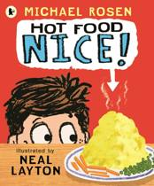
Hot Food: Nice!
Michael Rosen · Illustrated by Neal Layton
· Walker Books · United Kingdom · ISBN 9781529530223
At a family dinner, a mouthful of hot potato sets off a comic sequence of sounds and reactions.

Oh Dear, Look What I Got!
Michael Rosen · Illustrated by Helen Oxenbury
· Walker Books · United Kingdom · ISBN 9781529532630
A child sets out to shop and comes home with one unexpected companion after another.
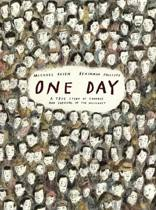
One Day: A True Story of Courage and Survival in the Holocaust
Michael Rosen · Illustrated by Benjamin Phillips
· Walker Studio · United Kingdom · ISBN 9781529515985
The true story of Eugène Handschuh follows his escape from a train bound for Auschwitz and his survival during the Holocaust.

Snow White and the Seven Bears
Michael Rosen · Illustrated by David Melling
· HarperCollins Children’s Books · United Kingdom · ISBN 9780008510022
Snow White’s story is retold with seven bears and a cast of familiar fairy-tale characters.

I Am Happy
Michael Rosen · Illustrated by Robert Starling
· Walker Books · United Kingdom · ISBN 9781529516555
An exuberant puppy imagines all the things its happiness might make it do.
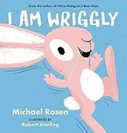
I Am Wriggly
Michael Rosen · Illustrated by Robert Starling
· Walker Books · United Kingdom · ISBN 9781529517057
A rabbit describes the many ways its body wants to move, even when it is time to settle down.
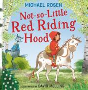
Not-So-Little Red Riding Hood
Michael Rosen · Illustrated by David Melling
· HarperCollins Children’s Books · United Kingdom · ISBN 9780008509972
Red Riding Hood sets out to visit her grandmother, with a twist on the familiar forest encounter.
The Big Dreaming
Michael Rosen · Illustrated by Daniel Egnéus
· Bloomsbury Children’s Books · United Kingdom · ISBN 9781408883297
As winter approaches, Little Bear goes looking for dreams to share with Big Bear during their long sleep.

Goldilocks and the Three Crocodiles
Michael Rosen · Illustrated by David Melling
· HarperCollins Children’s Books · United Kingdom · ISBN 9780008509927
Goldilocks follows a new route through the familiar fairy tale and encounters three crocodiles.
I Am Hungry
Michael Rosen · Illustrated by Robert Starling
· Walker Books · United Kingdom · ISBN 9781529510980
A hungry squirrel imagines a meal that grows more extravagant with every turn of the page.

I Am Angry
Michael Rosen · Illustrated by Robert Starling
· Walker Books · United Kingdom · ISBN 9781406396652
An angry kitten describes how big and powerful its feelings seem, and discovers what helps them settle.

Michael Rosen’s Sticky McStickstick: The Friend Who Helped Me Walk Again
Michael Rosen · Illustrated by Tony Ross
· Walker Books · United Kingdom · ISBN 9781529503241
Rosen recounts learning to walk again after serious illness, with help from his care team and a walking stick.

A Dog’s Tale: Life Lessons for a Pup
Michael Rosen · Illustrated by Tony Ross
· Scholastic · United Kingdom · ISBN 9781407188577
An older dog offers a pup advice on how to approach life and its uncertainties.

Chocolate Cake
Michael Rosen · Kevin Waldron
2017 · Puffin · United Kingdom
A child’s night-time encounter with an irresistible cake becomes a lively spoken narrative. Sound effects, pauses and the temptation to keep taking another bite make it especially rewarding to hear aloud.

A Great Big Cuddle: Poems for the Very Young
Michael Rosen · Chris Riddell
2015 · Walker Books · United Kingdom
Short poems explore sounds, bodies, everyday experiences and imaginary situations. Try a poem more than once, letting children choose the noises, gestures or pauses they want to contribute.

Monster
Michael Rosen · Illustrated by Neal Layton
· Bloomsbury Children’s Books · United Kingdom · ISBN 9781408846957
A family dog tries to make sense of an unfamiliar creature in its home.

The Bus Is for Us!
Michael Rosen · Gill Tyler
2015 · Walker Books · United Kingdom
Children imagine travelling in a succession of vehicles before celebrating a shared bus ride.

Send for a Superhero!
Michael Rosen · Illustrated by Katharine McEwen
· Walker Books · United Kingdom · ISBN 9781406355505
A bedtime comic introduces two villains and a succession of would-be superheroes.
Bob the Bursting Bear
Michael Rosen · Illustrated by Tony Ross
· Andersen Press · United Kingdom · ISBN 9781849394406
A toy bear with a damaged seam waits to find out whether anyone will want him.
Happy Harry’s Café
Michael Rosen · Illustrated by Richard Holland
· Walker Books · United Kingdom · ISBN 9781406314465
A queue of animals turns up at Harry’s café, where a repeated joke and refrain shape the story.
Bananas in My Ears
Michael Rosen Quentin Blake
2011 · Walker Books · United Kingdom
Rosen turns everyday mishaps, thoughts and conversations into short comic pieces. Read for the movement between ordinary speech and surprising sounds rather than expecting every poem to rhyme.
Dear Fairy Godmother
Michael Rosen · Illustrated by Nick Sharratt
· Walker Books · United Kingdom · ISBN 9781406338362
Fairy-tale characters write letters asking their fairy godmother for help with their problems.

Tiny Little Fly
Michael Rosen · Kevin Waldron
2010 · Walker Books · United Kingdom
A small fly disrupts much larger animals, who cannot quite catch it.

Bear Flies High
Michael Rosen · Illustrated by Adrian Reynolds
· Bloomsbury Children’s Books · United Kingdom · ISBN 9781408838709
Bear wants to fly, and a visit to the fair gives him a chance to see what that might feel like.

I’m Number One!
Michael Rosen · Illustrated by Bob Graham
· Walker Books · United Kingdom · ISBN 9781406326024
A bossy toy insists on being first until the other toys challenge his rules.

Red Ted and the Lost Things
Michael Rosen · Joel Stewart
2009 · Walker Books · United Kingdom
A lost teddy meets other discarded belongings and tries to find a route home. The unfamiliar spaces and unlikely companions make a gentle adventure about being valued and finding help.

Dear Mother Goose
Michael Rosen · Nick Sharratt
2008 · Walker Books · United Kingdom
Nursery-rhyme characters write to Mother Goose with problems that complicate their familiar stories.

The Bear in the Cave
Michael Rosen · Adrian Reynolds
2007 · Bloomsbury · United Kingdom
A bear leaves his quiet home to investigate a busy city. Repeated language and changing soundscapes invite comparison between excitement, noise and the comfort of returning somewhere familiar.

Howler
Michael Rosen · Illustrated by Neal Layton
· Bloomsbury Children’s Books · United Kingdom · ISBN 9781408838891
A family dog narrates the changes that follow the arrival of a baby.

Michael Rosen’s Sad Book
Michael Rosen Quentin Blake
2004 · Walker Books · United Kingdom
Words and pictures make space for grief that can persist and change over time.
Lovely Old Roly
Michael Rosen · Illustrated by Priscilla Lamont
· Frances Lincoln · United Kingdom · ISBN 9780711214880
When their old cat dies, the children and their family find ways to remember him.
Rover
Michael Rosen · Illustrated by Neal Layton
· Walker Books · United Kingdom · ISBN 9781408845806
A dog tells the story of its day out with the family, reversing the usual roles of pet and owner.
Snore!
Michael Rosen · Illustrated by Jonathan Langley
· HarperCollins Children’s Books · United Kingdom · ISBN 9780008510459
Farm animals try to quiet a snoring dog so they can get some sleep.
The Zoo at Night
Michael Rosen · Illustrated by Bee Willey
· Tradewind Books · Canada · ISBN 9781896580005
Illustrated verses imagine the mischief zoo animals get up to when the visitors and keepers go home.

This Is Our House
Michael Rosen · Bob Graham
1996 · Walker Books · United Kingdom
George claims a cardboard house and invents reasons to keep other children out.

Little Rabbit Foo Foo
Michael Rosen · Arthur Robins
1990 · Walker Books · United Kingdom
A mischievous rabbit repeatedly ignores a warning from a fairy.
We’re Going on a Bear Hunt
Michael Rosen Helen Oxenbury
1989 · Walker Books · United Kingdom
A family crosses grass, water and mud before its bear hunt becomes unexpectedly real.
David M. Schwartz
David M. Schwartz writes books that make large numbers and unfamiliar scales easier to imagine. How Much Is a Million? and If You Hopped Like a Frog use playful comparisons to turn abstract ideas into questions children can explore.
Millions to Measure
David M. Schwartz · Steven Kellogg
2003 · HarperCollins · United States · ISBN 9780688129163
Marvelosissimo returns for an illustrated exploration of measurement and its changing units. Compare why different systems arose and try estimating a familiar object before choosing a suitable unit.
If You Hopped Like a Frog
David M. Schwartz · James Warhola
1999 · Scholastic Press · United States · ISBN 9780590098571
Animal abilities are scaled up to human size to turn proportion into an imaginative question.

If You Made a Million
David M. Schwartz · Steven Kellogg
1989 · Lothrop, Lee & Shepard Books · United States · ISBN 9780688070175
A playful journey connects earning, saving and large amounts of money.

How Much Is a Million?
David M. Schwartz · Steven Kellogg
1985 · Lothrop, Lee & Shepard Books · United States · ISBN 9780688040499
A mathematical magician helps children imagine a quantity too large to count directly.
Maurice Sendak
Maurice Sendak wrote and illustrated picturebooks that give childhood fears and desires room to unfold. In Where the Wild Things Are, the pictures expand across the page as Max’s imagined world takes over.

Bumble-Ardy
Maurice Sendak
2011 · HarperCollins · United States
A pig plans the birthday party he has never had, and the celebration grows out of control.

We Are All in the Dumps with Jack and Guy
Maurice Sendak
1993 · Harper & Row · United States
Nursery-rhyme fragments become a visual narrative about children facing poverty and danger.

Outside Over There
Maurice Sendak
1981 · Harper & Row · United States
Ida must recover her baby sister after goblins take her away.

In the Night Kitchen
Maurice Sendak
1970 · Harper & Row · United States
Mickey’s dream carries him through a kitchen where baking becomes a surreal adventure.

Higglety Pigglety Pop! or There Must Be More to Life
Maurice Sendak
1967 · Harper & Row · United States
Jennie the dog leaves comfort behind in search of experience and eventually a part in a play.

Where the Wild Things Are
Maurice Sendak
1963 · Harper & Row · United States
After an argument at home, Max travels into a world where his anger and imagination take expansive form.

The Sign on Rosie’s Door
Maurice Sendak
1960 · Harper & Brothers · United States
Rosie turns an ordinary day into a performance for the children around her. Watch how props, gesture and audience response blur the boundary between play and theatrical storytelling.
Kenny’s Window
Maurice Sendak
1956 · Harper & Brothers · United States
A dream sets Kenny a series of questions that lead into imaginative encounters. The episodic form leaves room to explore loneliness, friendship and questions that resist literal answers.
Craig Smith
Craig Smith is a New Zealand songwriter and author whose collaborations with Katz Cowley bring cumulative rhyme into shared reading. In The Wonky Donkey, each new description adds to a refrain that readers can say or sing.

The Grinny Granny Donkey
Craig Smith · Katz Cowley
2020 · Scholastic · New Zealand · ISBN 9781338692273
A grandmother joins the donkey family in a sequence of increasingly crowded rhymes.
Story / creator connection: Aotearoa New Zealand
The Dinky Donkey
Craig Smith · Katz Cowley
2019 · Scholastic · New Zealand · ISBN 9781338600834
The next generation of the donkey family brings another accumulating rhyme and a lively set of sounds. Compare how each new description changes the rhythm, and let listeners choose spoken, signed or quieter participation.
Story / creator connection: Aotearoa New Zealand

The Wonky Donkey
Craig Smith · Katz Cowley
2018 · Scholastic · New Zealand · ISBN 9781407195575
A donkey acquires an increasingly elaborate string of rhyming descriptions.
Story / creator connection: Aotearoa New Zealand
Catarina Sobral
Catarina Sobral is a Portuguese author and illustrator whose picturebooks use bold shapes and deliberate colour choices. In O Meu Avô, contrasting routines make different ways of experiencing time visible.

Fantasmas, bananas e avestruzes
Catarina Sobral
Portuguese · Assembleia da República · Portugal · 2023 · ISBN 9789725568293
Language of this edition: Portuguese
Playful pictured examples give readers a way into the unseen rules that shape daily life.

O Meu Avô
Catarina Sobral (author and illustrator)
Lisboa · Orfeu Negro · Portugal · First published 2014 · ISBN 9789898327321 (publisher’s listed edition)
Language of this edition: Portuguese
A retired watchmaker and a busy doctor live by different rhythms.
Alexandra Strick
Alexandra Strick writes picturebooks about participation and belonging. Her collaborations with Steve Antony in You Can! and We Can! place children’s ambitions and choices at the centre of the story.
We Can!: Make a Difference
Alexandra Strick · Steve Antony
2024 · Otter-Barry Books · United Kingdom · ISBN 9781915659309
A child-led festival makes room for accessible play and collective action.

You Can!
Alexandra Strick · Steve Antony
2021 · Otter-Barry Books · United Kingdom
Follow the same children across life stages and look for the visual stories that run alongside the text.
Shaun Tan
Shaun Tan uses unfamiliar settings and shifts in scale to explore migration, isolation and belonging. His wordless book The Arrival lets readers piece together a new world alongside its protagonist.

Eric
Shaun Tan
2020 · Scholastic Press · United States
A family hosts an exchange student whose interests seem unexpectedly small and particular.

Cicada
Shaun Tan
2018 · Hodder Children’s Books · United Kingdom
An insect office worker endures exclusion and exploitation in a human workplace. The restricted narration and abrupt visual shift at the end make this a challenging book about labour, power and escape.
The Arrival
Shaun Tan
2014 · Hodder Childrens Books · Australia
A newcomer navigates an unfamiliar city in a wordless sequence of drawings.
Rules of Summer
Shaun Tan
2013 · Lothian Children’s Books · Australia
Two boys move through a summer governed by strange, often unspoken rules.

The Red Tree
Shaun Tan
2001 · Lothian Books · Australia
Trace how recurring visual details give shape to feelings the narrator struggles to name.

The Lost Thing
Shaun Tan
2000 · Lothian Books · Australia
A boy notices a strange creature that everyone else seems to overlook. Industrial settings and official instructions create a question about whether fitting in is the same as finding a place to belong.

Memorial
Gary Crew (author) · Shaun Tan (illustrator)
1999 · Lothian Books · Australia
A family’s memories gather around a tree threatened by road development. The layered images connect personal recollection, war remembrance and public decisions about what a community preserves.

The Rabbits
John Marsden (author) · Shaun Tan (illustrator)
1998 · Lothian Books · Australia
Introduced rabbits transform a landscape inhabited by other creatures. Its allegory opens discussion of colonisation and environmental change; contextualise the book as a work by non-Indigenous creators rather than an Indigenous account of invasion.
Paloma Valdivia
Santiago-born author and illustrator Paloma Valdivia works across original picturebooks and illustrated poetry. She was shortlisted for the 2024 Hans Christian Andersen Award for Illustration.

Nosotros Means Us
Paloma Valdivia
· Alfred A. Knopf · United States · ISBN 9780593305140
In this bilingual Spanish–English picturebook, a mother imagines the many forms she and her child could take while remaining close.
Martin Waddell
Martin Waddell writes picturebooks in which repetition gives children language for fear and reassurance. In Owl Babies and Can’t You Sleep, Little Bear?, repeated exchanges make small changes in feeling easy to hear.

Can’t You Sleep, Little Bear?
Martin Waddell · Barbara Firth
2004 · Candlewick Press · United Kingdom · ISBN 9780763622053
Little Bear’s fear of the dark persists even as Big Bear brings larger lamps. The patient exchange and the final view of the night sky offer reassurance while taking the smaller bear’s worry seriously.
Owl Babies
Martin Waddell · Patrick Benson
First published 1992 · Listed edition: ISBN 9780744531671 · United Kingdom · Walker
Three young owls wait together for their mother to return. Their different responses to the same separation invite conversation about worry, reassurance and the comfort of being with someone else.
Maya Wegerif
Wegerif, also known as Sho Madjozi, explores grief through the relationship between two sisters.

Shoma and the Stars
Maya Wegerif (author) · Katlego Keokgale (illustrator)
· Ethnikids Publishers · South Africa
After her little sister becomes a star in the sky, Shoma looks for ways to stay connected to her.
David Wiesner
David Wiesner writes and illustrates picturebooks that ask readers to follow visual clues. In wordless stories such as Flotsam, framing and page turns do much of the storytelling.

Mr. Wuffles!
David Wiesner
2013 · Clarion Books, Houghton Mifflin Harcourt · United States
A cat’s apparently uninteresting toy contains tiny visitors with a problem to solve. Invented written languages and panel sequences ask readers to infer communication through pictures and cooperation.

The Three Pigs
David Wiesner
2012 · Andersen Press · United States
Characters step outside their printed story and move between different narrative worlds.

Art & Max
David Wiesner
2010 · Clarion Books · United States
An attempt to paint a portrait changes the characters and the materials of their world. Colour, line and the physical properties of paint become part of the joke about what making art might mean.

Flotsam
David Wiesner
2006 · Clarion Books · United States
A child finds an underwater camera washed onto a beach and develops its extraordinary photographs. Repeated images invite close looking at scale, time and the chain of people connected through the camera.

Sector 7
David Wiesner
1999 · Clarion Books · United States
A visit to a tall building leads a child into the workshop where clouds are made. The visual narrative connects imaginative drawing with questions about routine, control and who gets to change the pattern.

Tuesday
David Wiesner
1991 · Clarion Books · United States
Frogs travel through a sleeping town on floating lily pads.

Hurricane
David Wiesner
1990 · Clarion Books · United States
Two brothers wait out a storm and discover new possibilities in its aftermath. The movement between domestic safety and outdoor imagination makes the fallen tree more than a damaged object.

Free Fall
David Wiesner
1988 · Lothrop, Lee & Shepard Books · United States
A sleeping child’s surroundings transform into a succession of dream landscapes.
Shinsuke Yoshitake
Japan
Shinsuke Yoshitake turns everyday objects and questions into playful investigations of identity and possibility. His small drawings and visual variations encourage readers to imagine alternative explanations.
Still Stuck
2017 · Abrams Books for Young Readers · United States
A child gets trapped in his clothes while undressing and turns a small frustration into imaginative comedy.

Can I Build Another Me?
2016 · Thames & Hudson · United Kingdom
A child imagines making a robot double and begins asking what makes a person unique.

It Might Be an Apple
Shinsuke Yoshitake (author-illustrator)
2015 · Thames & Hudson · United Kingdom
A child considers what an apple might be, moving from an ordinary object to increasingly inventive possibilities.